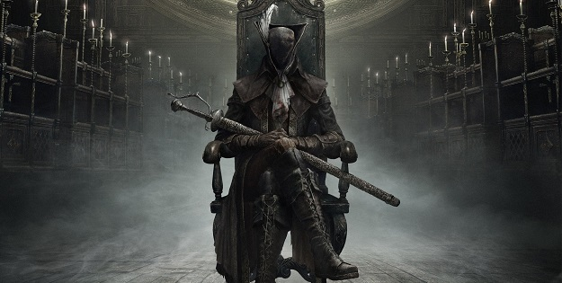
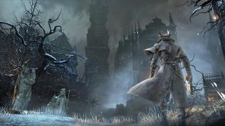

Bloodborne is an action role-playing game played from a third-person perspective and features elements similar to those found in the Souls series of games, particularly Demon's Souls and Dark Souls.[1] The player makes their way through different locations within the decrepit Gothic world of Yharnam, while battling varied enemies, including bosses,[2] collecting different types of useful items that have many uses, interacting with the strange non-player characters,[3] opening up shortcuts, and continuing through the main story.  At the beginning of the game, the player creates their character, the Hunter. The player determines the basic details of the Hunter; gender, hairstyle, name, skin colour, body shape, voice, and eye colour, are some of the details the player determines. The player also chooses a starting class, known as an "Origin", which provides a basic backstory for the Hunter and sets the player's starting attributes. The Origins allow the player's Hunter to have a distinct play style, which, along with physical appearance, give the Hunter a unique personality. For example, one Origin may describe the Hunter as a cowardly weakling, which would indicate the player prefers to avoid conflict, while another Origin may describe the Hunter as being a ruthless, killing machine, which would indicate that the Hunter prefers to engage in combat.[4][5] Another way the player defines their Hunter is by choosing what brotherhood they are a member of. These religious societies, known as 'Covenants', each have their own views on the world of Yharnam.[6][7]
The player can return to the safe zone, known as the "Hunter's Dream", by interacting with lanterns spread throughout the world of Yharnam. Doing so replenishes health, but repopulates all monsters in the game world. Lanterns also serve as the game's checkpoints; the player will return to the last activated lantern when they die. Positioned away from Yharnam, the Hunter's Dream delivers some of the game's basic features to the player. Players may purchase useful items, such as clothing, from the Messengers using Blood Echoes or Insight, level up their character by talking to the Doll, or upgrade their weapons in the workshop, among other things. Unlike Yharnam and all other locations in the game, the Hunter's Dream is considered completely safe as it is the only location in the game not to feature enemies. However, the last two boss battles of the game take place in the Hunter's Dream, although both are optional to the player.[8][9][10] Bloodborne's world of Yharnam is a large map full of inter-connected areas. Some areas of Yharnam are not connected to the main locations and require t
Bloodborne is an action role-playing game played from a third-person perspective and features elements similar to those found in the Souls series of games, particularly Demon's Souls and Dark Souls.[1] The player makes their way through different locations within the decrepit Gothic world of Yharnam, while battling varied enemies, including bosses,[2] collecting different types of useful items that have many uses, interacting with the strange non-player characters,[3] opening up shortcuts, and continuing through the main story. At the beginning of the game, the player creates their character, the Hunter. The player determines the basic details of the Hunter; gender, hairstyle, name, skin colour, body shape, voice, and eye colour, are some of the details the player determines. The player also chooses a starting class, known as an "Origin", which provides a basic backstory for the Hunter and sets the player's starting attributes. The Origins allow the player's Hunter to have a distinct play style, which, along with physical appearance, give the Hunter a unique personality. For example, one Origin may describe the Hunter as a cowardly weakling, which would indicate the player prefers to avoid conflict, while another Origin may describe the Hunter as being a ruthless, killing machine, which would indicate that the Hunter prefers to engage in combat.[4][5] Another way the player defines their Hunter is by choosing what brotherhood they are a member of. These religious societies, known as 'Covenants', each have their own views on the world of Yharnam.[6][7]
The player can return to the safe zone, known as the "Hunter's Dream", by interacting with lanterns spread throughout the world of Yharnam. Doing so replenishes health, but repopulates all monsters in the game world. Lanterns also serve as the game's checkpoints; the player will return to the last activated lantern when they die. Positioned away from Yharnam, the Hunter's Dream delivers some of the game's basic features to the player. Players may purchase useful items, such as clothing, from the Messengers using Blood Echoes or Insight, level up their character by talking to the Doll, or upgrade their weapons in the workshop, among other things. Unlike Yharnam and all other locations in the game, the Hunter's Dream is considered completely safe as it is the only location in the game not to feature enemies. However, the last two boss battles of the game take place in the Hunter's Dream, although both are optional to the player.[8][9][10] Bloodborne's world of Yharnam is a large map full of inter-connected areas. Some areas of Yharnam are not connected to the main locations and require the player to teleport there via the gravestones in the Hunter's Dream. The player is usually presented with multiple options when progressing through locations; usually there is a main path that the player uses to progress through the story. When traversing the main path, the player will encounter paths that lead to completely different locations that are optional. Each path also eventually leads back to the central area the player started in. This provides the player with shortcuts, useful for when they die or need to backtrack.[11][12]